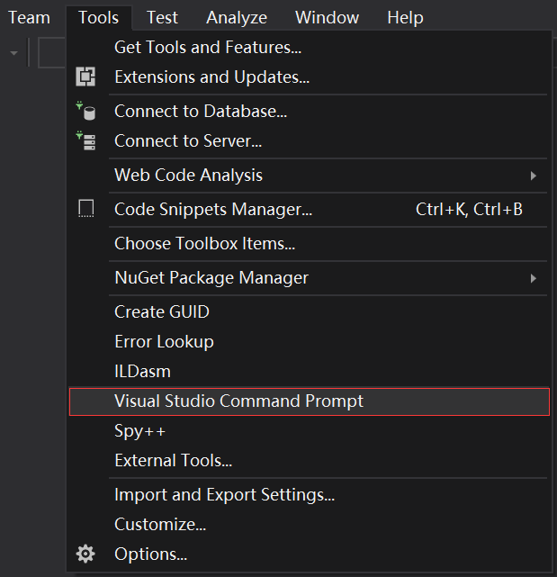

Windows 源码安装¶
以下源码编译安装过程。如果只需使用预编译好的库，请参考 Windows EXE 安装。
1. 安装编译工具¶
1.1 安装 Visual Studio¶
从 https://visualstudio.microsoft.com/zh-hans/vs/older-downloads/ 下载并安装。选择c++桌面开发，下载

小技巧
支持Visual Studio 2015 和 Visual Studio 2017.
1.2 安装 CMake¶
从 https://cmake.org/ 下载并安装
2. 安装 SDK 依赖¶
2.1 安装 OpenCV¶
2.1.1 用预先建立的库安装OpenCV (Recommend)¶
*更多信息您可以参考 OpenCV 官方文档 *
进入 OpenCV 源码页 http://sourceforge.net/projects/opencvlibrary/files/opencv-win/
下载一个您想要安装的安装包. 例如 3.4.2/opencv-3.4.2-vc14_vc15.exe
使用管理员权限运行安装包
安装完成之后，设置 OpenCV 环境变量并添加到系统的 path 变量中
2.1.2 设置环境变量¶
1.使用管理员权限开启 cmd, 输入以下命令来添加OPENCV_DIR变量到系统变量中:
将 “D:OpenCV” 替换为您自己的解压缩目录
setx -m OPENCV_DIR D:\OpenCV\Build\x64\vc14\lib (Visual Studio 2015 使用该命令)
setx -m OPENCV_DIR D:\OpenCV\Build\x64\vc15\lib (Visual Studio 2017 使用该命令)
也可以参考 如何添加系统变量 将变量手动添加。
D:\OpenCV\Build\x64\vc14\lib (Visual Studio 2015 使用该路径)
D:\OpenCV\Build\x64\vc15\lib (Visual Studio 2017 使用该路径)
2.将 OpenCV bin 路径添加到系统环境变量的 PATH 变量列表中
D:\OpenCV\Build\x64\vc14\bin (Visual Studio 2015 使用该路径)
D:\OpenCV\Build\x64\vc15\bin (Visual Studio 2017 使用该路径)
2.2 安装 libjpeg-turbo¶
从 https://sourceforge.net/projects/libjpeg-turbo/files/ 下载 libjpeg-turbo 并安装
将 bin 目录的路径添加到系统变量的 PATH 变量列表中
C:\libjpeg-turbo64\bin
2.3 安装点云例程依赖的 PCL 库 (可选)¶
从 https://github.com/PointCloudLibrary/pcl/releases 下载集成安装程序(PCL + dependencies)
3. 编译 SDK¶
打开 “x64 Native Tools Command Prompt for VS 2017”(适用于 VS 2017 的 x64 本机工具命令提示) 命令行界面
git clone https://github.com/slightech/MYNT-EYE-D-SDK.git
cd MYNT-EYE-D-SDK
make all
小技巧
Visual Studio Command Prompt 可以从开始菜单打开，

也可以从 Visual Studio 的工具菜单里打开，
{kind=link}
但如 Visual Studio 2015 工具菜单里可能没有，可以自己添加个。
打开 Tools 的 External Tools… ，然后 Add 如下内容：
Field |
Value |
|---|---|
Title |
Visual Studio Command Prompt |
Command |
|
Arguments |
|
Initial Directory |
|
4. 运行例程¶
注解
默认打开矫正后的图像。(跑vio时需要使用原图，跑深度或者点云使用矫正后的图像)
get_image 显示左目的图像和彩色深度图 (兼容USB2.0)
.\samples\_output\bin\get_image.bat
get_stereo_image 显示左右目的图像和彩色深度图
.\samples\_output\bin\get_stereo_image.bat
get_depth 显示左目的图像，16UC1的深度图和鼠标选中的像素的深度值(mm)
.\samples\_output\bin\get_depth.bat
get_points 显示左目的图像，16UC1的深度图和点云
.\samples\_output\bin\get_points.bat
get_imu 打印 imu 数据
.\samples\_output\bin\get_imu
get_img_params 打印相机参数并保存在文件中
.\samples\_output\bin\get_img_params
get_imu_params 打印 imu 参数并保存在文件中
.\samples\_output\bin\get_imu_params
get_from_callbacks 使用回调方式获取图像和 imu 数据
.\samples\_output\bin\get_from_callbacks
get_all_with_options 使用不同参数打开设备
.\samples\_output\bin\get_all_with_options
get_depth_with_filter 显示滤波后的深度图像
.\samples\_output\bin\get_depth_with_filter
get_points_with_filter 显示滤波后的点云图像
.\samples\_output\bin\get_points_with_filter
5. 清理¶
cd <sdk> # <sdk>为SDK所在路径
make cleanall